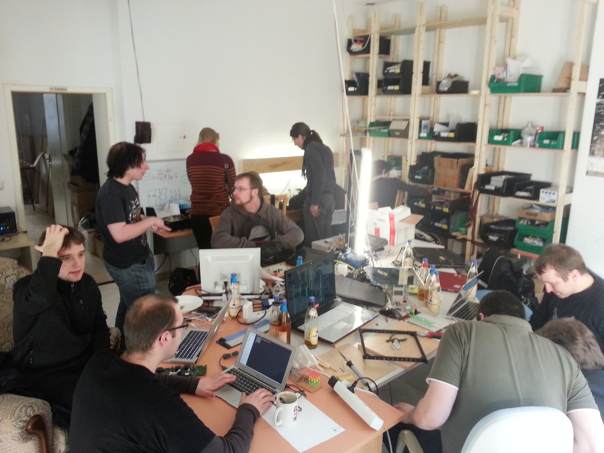

Cryptoparty
Workshop
A story about alice, bob and mallory!

Ablauf
-
Begrüßung
-
Einführung
-
Was kann man tun?
-
Fazit / Ihre Erwartungen
Begrüßung
Netz39

Heute: Hands On-Workshop
- Kurze Einführung: Warum ist Sicherheit wichtig?
- Aber ich habe doch nichts zu verbergen? → Doch!
- Vorstellung der wichtigsten Sicherheitsaspekte
- Vorstellung der ausgewählter Tools.
Anschließend: Einführung und Installation einzelner Tools.
- Weitere Fragen klären wir ”on the fly“.
Ihre Erwartungen
Einführung
Beispiel 1 - Kutscher aus Regensburg
- von Polizei als vermeintlicher Drogenschmuggler festgenommen
- Grund: mit der "falschen" Person kommuniziert Quelle

Beispiel 2 - Ilija Trojanow
- Einreiseverbot für die USA
- Gründe: unbekannt Quelle

Jeder ist betroffen!
- Social Engineering ("soziale Manipulation")
-
- zwischenmenschliche Beeinflussung, um ein best. Verhalten hervorzurufen
- Nutzung vertraulicher Informationen, um Berechtigungen / Vertrauensverhältnis vorzutäuschen
- Identitäts-Diebstahl (Identity Theft)
-
- missbräuchliche Nutzung personenbezogener Daten (der Identität) einer natürlichen Person durch Dritte
Fazit
- jegliche Kommunikation wird überwacht/mitgeschitten
- man ist im Netz nicht anonym → panopticlick.eff.org
- Es kann jeden treffen! (egal ob Student, Journalist, Pfarrer, …)
- man gerät schnell ins Raster, wenn:
- man sich über die "falschen" Dinge informieren will
- man die "falschen" Dinge kauft, z.B. 10 Liter Bleiche ;)
- man zur "falschen" Zeit am "falschen" Ort neben der falschen Person steht
- wer betroffen ist, erfährt selten die Gründe
- → Ohnmacht
Was kann man tun?
Internet: Browser Plugins
Internet: Tor
Tor ist ein Netzwerk zur Anonymisierung von Verbindungsdaten.
Betriebssystem: TAILS
Livesystem per USB das keine Spuren hinterlässt.
Internet: Soziale Netzwerke
- Bin ich Nutzer oder Produkt?
- Wer hat Zugriff auf meine Daten? Hinter Facebook steht eine gewinnorient operierende Firma!
- Auch andere Leute veröffentlichen Ihre privaten Daten.
- Bewusste Nutzung kann helfen.
- Noch besser ist der Verzicht auf geschlossene Plattformen und der Wechsel zu offenen Alternativen, z.B Diaspora.
- Faustregel: Veröffentliche nichts, was deine Eltern nicht sehen dürfen!
Alternativen zur Googlesuchmaschine
- Anonymisierte Googlesuche:
- Meta-Suchmaschinen:
- Suchmaschine mit anderem Algorithmus:
GnuPG

- Problem: E-Mails sind Postkarten im Internet.
- Lösung: Verschlüsselung des Klartextes in einen Geheimtext
- GPG ist ein etabliertes Verfahren für E-Mail-Verschlüsselung
- Idee: Kommunikationspartner besitzen ein Schlüsselpaar:
- Privater Schlüssel (zum Entschlüsseln)
- Öffentlicher Schlüssel (zum Verschlüsseln)
- Funktion: Texte die mit einem öffentlichen Schlüssel verschlüsselt sind können nur(!) von dessen zugehörigen privaten Schlüssel entschlüsselt werden.
Kommunikation: E-Mail
- Email-Anbieter im Web
- posteo.de bietet zumindest Verschlüsselung von Adressbuch und Kalender
- Mailbox.org Vollständig verschlüsselter deutscher E-Mail-Dienst
- Lokale E-Mail
- Thunderbird und Enigmail
- K9-Mail mit APG (Android)
Kommunikation: Chat
- Offene Protokolle verwenden!
- XMPP, IRC, …
- XMPP mit GnuPG
- OTR (Off-the-Record Messaging)
- z.B. mit Pidgin und pidgin-otr
- gute Anleitung in Spiegel Online
Verschlüsselung von Daten
- Festplattenverschlüsselung
- DiskCryptor
- TrueCrypt (aktuelle Version unsicher, 7.1a benutzen)
- dm-crypt/luks
- Verschlüsseln lokaler Dateien
Vermeidung proprietärer Software
- Vergangenheit zeigt: immer wieder Hintertüren
- e.g. MS Windows → heise: How NSA access was built into Windows
- Softwarekonzerne oft gezwungen, Geheimhaltung
- Support für WindowsXP läuft Anfang April aus – danach gibt es keine Sicherheitsupdates mehr
- FOSS quelloffen, jederzeit Untersuchung auf Schadcode möglich
- nicht der Ottonormaluser, aber eine starke Community
- → Hintertüren/Schadcode in jeder (auch FOSS) Software möglich
- → bei FOSS kann man nachschauen,
- → prop. Software muss man vertrauen.
Umstieg auf freie Software
- Hier empfiehlt sich ein Blick auf https://prism-break.org/de/
- Betriebssysteme:
- Windows → Linux
- Android → Cyanogenmod, Replicant
- Mac OS X → Linux
- Softwarestore
- GooglePlayStore → F-Droid
Jede Software stets aktuell halten!
xkcd: Password strength

Passwordmanager
- Unterschiedliches Passwort für jeden Webseiten-Login
- Schwierig zu merken → Passwordmanager
- Zum Beispiel
- Keypass(X)
Unterstützen
- FOSS (Free/Libre Open Source Software)
- netzpolitik.org
- digital courage e.V.
- FSFE (z.B. Bücher bei bookzilla statt amazon kaufen)
- Netz39-Mitglied werden
- Freifunk Magdeburg unterstützen
- CCC (Chaos Computer Club e.V.)
Soziale/politische Probleme lassen sich i.d.R nicht mit technischen Mitteln lösen!
Fazit / Feedback
-
Ihre Erwartungen?
-
Haben wir etwas vergessen?